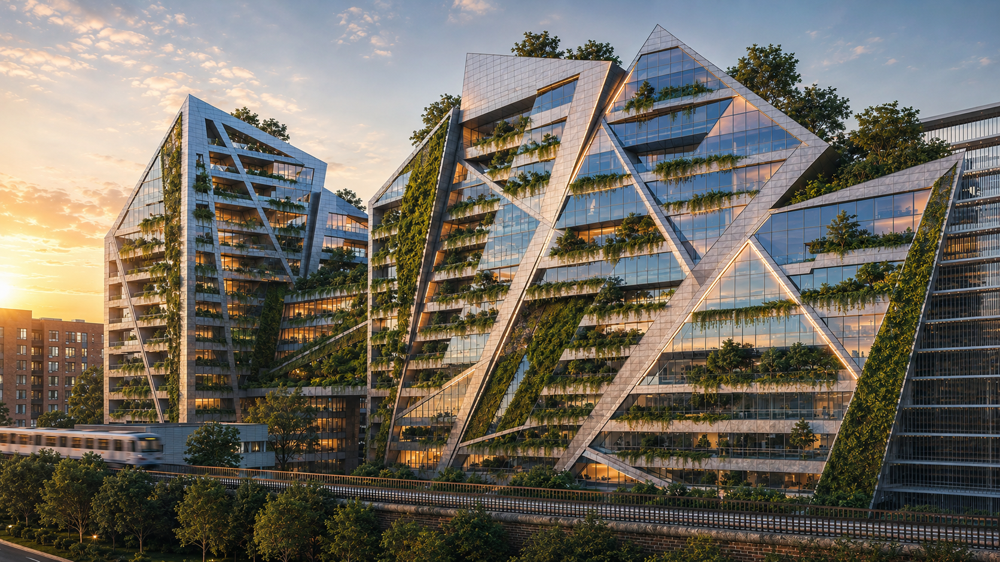
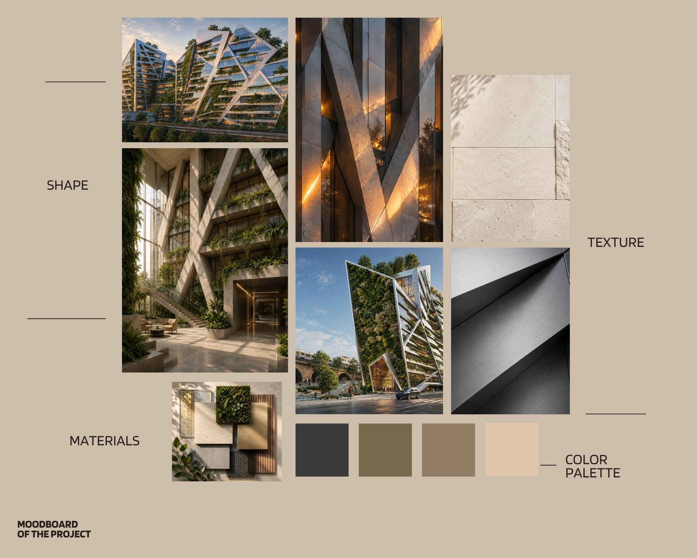
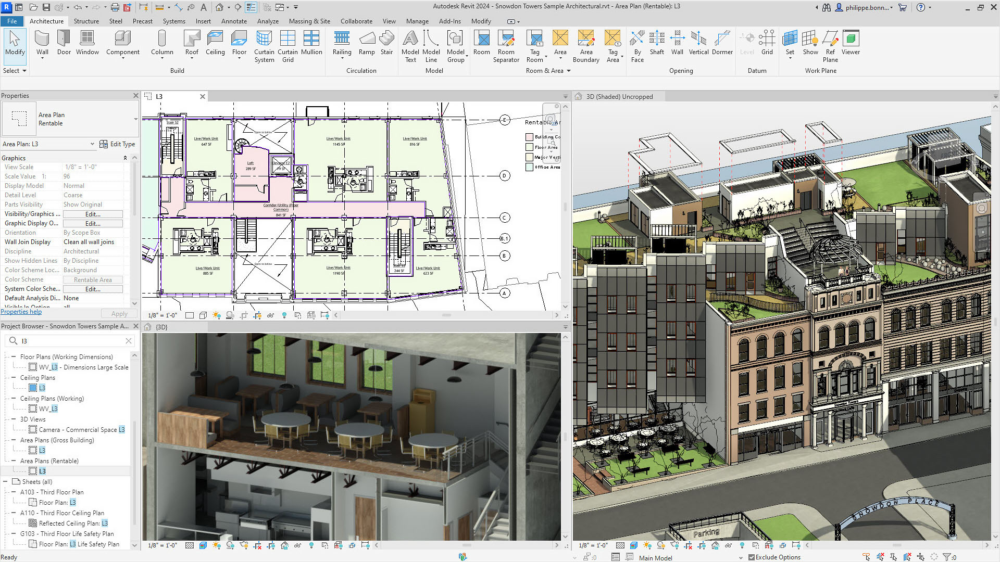
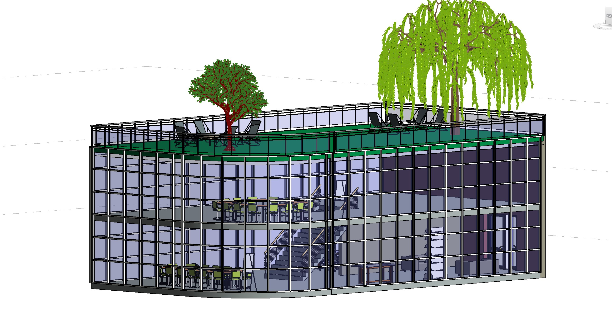
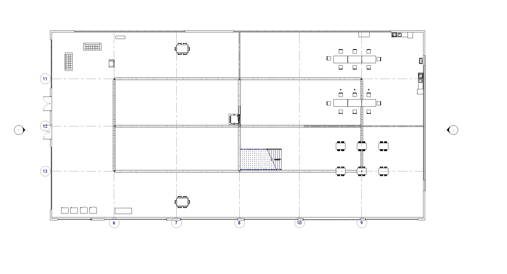
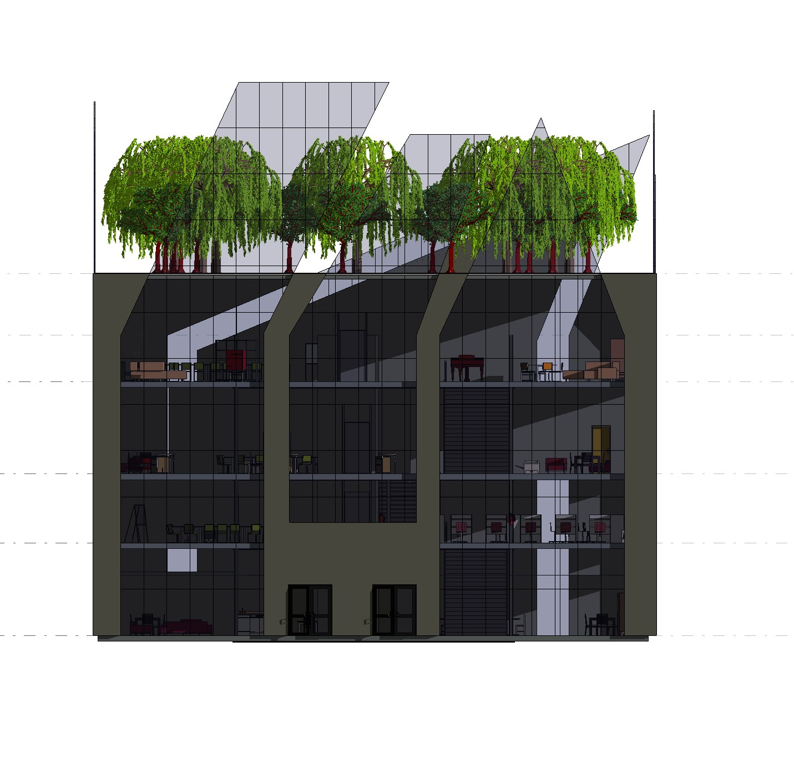
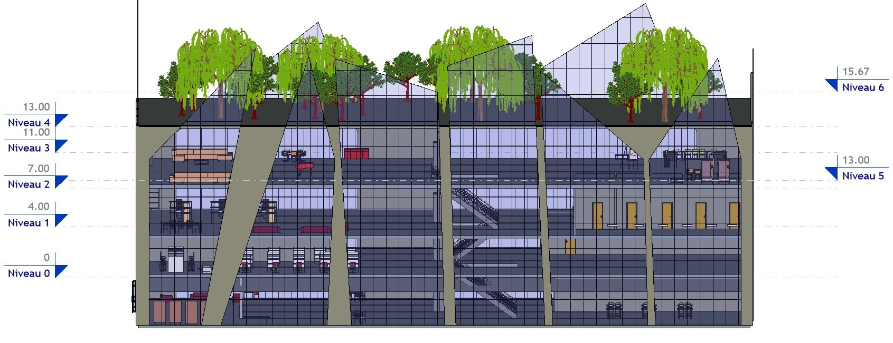
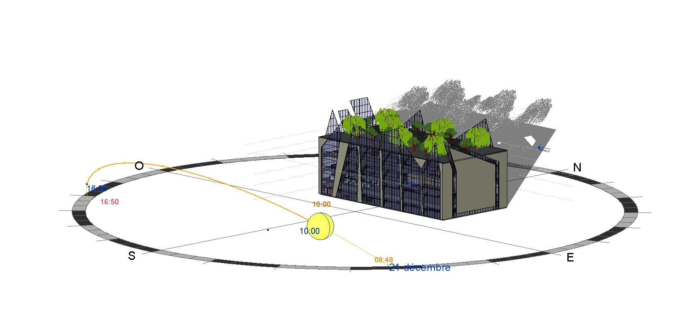
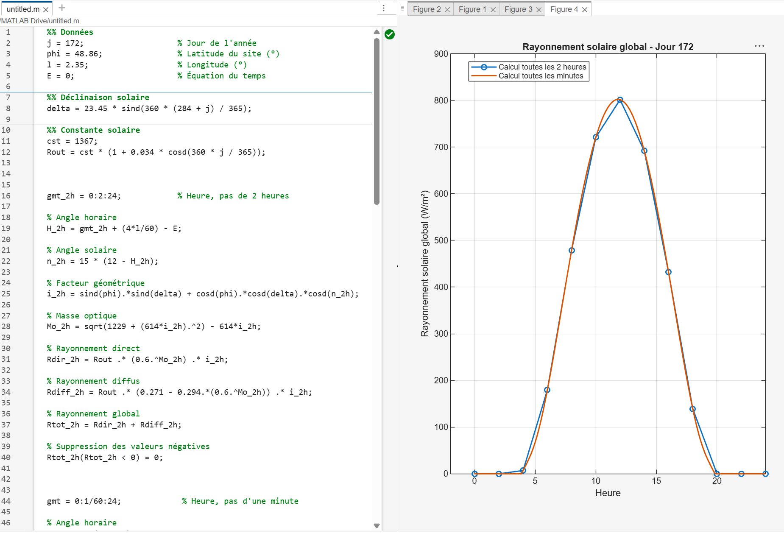
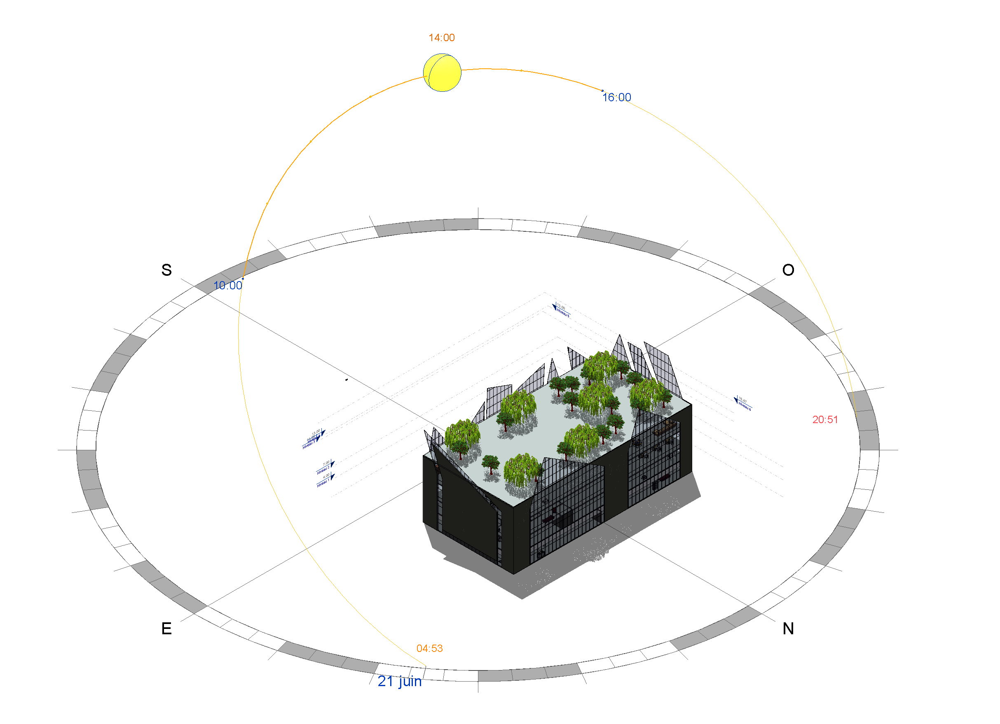

Étude personnelle réalisée durant mon stage chez Arquitectonica Europe afin d'explorer la démarche de conception architecturale, la modélisation BIM et l'analyse environnementale d'un projet contemporain.
Une analyse personnelle développée à partir d'un projet d'Arquitectonica Europe dans le respect des règles de confidentialité.
Dans le cadre de mon stage chez Arquitectonica Europe, j'ai souhaité approfondir l'étude d'un projet afin de mieux comprendre les différentes étapes de conception architecturale.
Les modèles BIM, plans et données internes de l'agence étant confidentiels, aucune information technique provenant d'Arquitectonica Europe n'a été utilisée.
L'ensemble du modèle présenté sur cette page a donc été réalisé personnellement à partir d'observations du bâtiment, de photographies publiques et de documents accessibles au public.
Cette démarche m'a permis de développer une méthodologie complète allant de l'analyse architecturale jusqu'à la simulation environnementale.

Comprendre la logique de conception, les volumes, l'organisation spatiale et le langage architectural.
Reconstituer un modèle numérique sous Autodesk Revit à partir des informations publiques disponibles.
Étudier l'ensoleillement, les ombres portées et les performances environnementales.
Exploiter les données issues du modèle afin de réaliser des traitements sous MATLAB.
Cette planche d'inspiration synthétise les principaux éléments architecturaux du projet étudié : matériaux, palette de couleurs, formes, végétation et ambiance générale.

Le projet se caractérise par une architecture sobre et élégante, privilégiant la lumière naturelle, les espaces ouverts et la continuité entre intérieur et extérieur.
Les matériaux, les textures et les couleurs participent à une esthétique intemporelle tout en répondant aux exigences de confort, de durabilité et d'intégration urbaine.
Volumes géométriques simples, lignes épurées et équilibre entre horizontalité et verticalité afin de créer une architecture contemporaine et élégante.
Façades vitrées, béton clair, aluminium et végétation intégrée afin de renforcer les performances environnementales et le confort des usagers.
Les tons beiges, gris minéraux et verts naturels créent une atmosphère douce, lumineuse et parfaitement intégrée à son environnement.
Une architecture qui privilégie la transparence, la lumière naturelle, le paysage et la qualité des espaces de vie.
Les espaces végétalisés participent pleinement à l'identité du projet et renforcent le lien entre architecture et nature.
Les larges surfaces vitrées maximisent les apports lumineux naturels tout en ouvrant les vues sur le paysage.
La façade combine rythme, transparence et performance afin de répondre aux contraintes climatiques et urbaines.
Une palette neutre composée de pierre, béton clair, verre et végétation crée une esthétique sobre et durable.
Une modélisation réalisée entièrement sous Autodesk Revit afin d'étudier le projet sous un angle architectural et environnemental.

Les fichiers BIM et les plans d'Arquitectonica Europe étant confidentiels, aucun document interne n'a été utilisé.
Le modèle présenté a été entièrement reconstruit à partir d'observations personnelles, de photographies publiques et de documents accessibles au public.
Cette reconstruction permet de mieux comprendre la composition volumétrique du bâtiment, son orientation ainsi que les principes de conception mis en œuvre.
Observation des volumes, des façades et des principales caractéristiques architecturales.
Création de la géométrie sous Autodesk Revit en respectant les proportions générales du projet.
Attribution des matériaux, vitrages et éléments paysagers nécessaires à l'étude.
Génération d'un modèle permettant les futures simulations environnementales.
Les différentes étapes de reconstruction du bâtiment.




Une fois la modélisation BIM terminée, le bâtiment est utilisé afin d'étudier son comportement face au rayonnement solaire et d'observer l'influence de son orientation sur les façades.

Grâce aux outils de simulation disponibles dans Revit, plusieurs études d'ensoleillement pourront être réalisées à différentes périodes de l'année.
Cette analyse permettra de visualiser les zones fortement exposées au soleil, les ombres portées ainsi que l'évolution de l'éclairage naturel au cours d'une journée.
Analyse des apports solaires durant la période estivale.
Observation de l'ensoleillement pendant la saison hivernale.
Étude des ombres portées sur le bâtiment et les espaces extérieurs.
Comparaison des différentes façades selon leur exposition.
Les données obtenues à partir de la modélisation BIM et des simulations environnementales pourront ensuite être exploitées afin de réaliser une analyse numérique plus approfondie.
MATLAB permettra d'analyser les résultats obtenus et de produire des graphiques facilitant l'interprétation des performances du bâtiment.

Quantifier les zones les plus exposées au soleil.
Identifier les périodes présentant un risque de surchauffe.
Générer des graphiques facilitant l'interprétation des résultats.
Mieux comprendre l'influence des choix architecturaux sur les performances environnementales.
Cette galerie présente les différentes étapes de l'étude, depuis l'analyse architecturale jusqu'aux simulations numériques.

Cette étude personnelle m'a permis d'aller au-delà de la simple observation d'un projet architectural en développant une démarche complète intégrant analyse, modélisation BIM et simulation environnementale.
La reconstruction du bâtiment sous Autodesk Revit, réalisée sans utiliser les données confidentielles d'Arquitectonica Europe, constitue un support de travail permettant de mieux comprendre les principes de conception et d'explorer l'influence de l'orientation sur les performances du bâtiment.
Les prochaines étapes consisteront à finaliser le modèle BIM, réaliser les simulations d'ensoleillement puis exploiter les résultats sous MATLAB afin de produire des indicateurs et des visualisations facilitant l'interprétation des données.
Finalisation du modèle Revit.
Simulation solaire sur plusieurs périodes de l'année.
Export des données environnementales.
Analyse numérique et création des graphiques sous MATLAB.